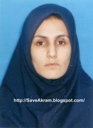

|
|
|
Browsing
Contact Us |
Campaigners |
Face to Face |
Tribune |
Interview |
News |
On the Web |
One Million |
Report
Farsi | Français | German | Italian | Spanish | العربية Also in this section
|
 Interview with Woman on Death Row Akram Mahdavi: I am Happy with DeathFriday 9 April 2010 View online : Committee of Human Rights Reporters In August 2006, Akram Mahdavi’s husband was killed. She recently wrote a letter to Haj Kazem, the director of Rajai Shahr prison. Mahdavi stated that she “cannot endure the tortures in prison anymore.” She has demanded for her case to be reviewed as soon as possible. She has also requested to be executed if she does not receive a pardon from the victim’s family. [Translator note: In Islamic sharia Law, the family of a murder victim has the right to choose between Qesas, an eye for an eye (execution), or receiving blood money for sparing the life of the accused]. The interview has been conducted by Saba Vasefi, an activist for the rights of women and children. Vasefi: Why did you attempt to kill your husband? Mahdavi: I was 13 years old when I was forced to marry my cousin. When I realized he had also married a wealthier older women, we got divorced. After he became a [drug] addict, I gained custody of my daughter. I took my eleven year old daughter with me to my second husband’s home, but she was always complaining about her step-father. She said that he “[sexually] touched and abused” her. Even one night, he went in my daughter’s bedroom [insinuating that some form of misconduct took place]. My [second] husband was 75 years old and I was 21. I was never happy with him, nor liked him. I was poor so I endured his harassment. However, when the safety of my daughter was in stake, I could not tolerate it any longer. My family is really poor. I have five brothers and two sisters. One of my sister’s has hemiplegia and I have epilepsy. My family was just thinking of a way to have one less dependant. My second husband did not inform me he also has other wives; his children told me about them. One of his wives is in Khomein (in the province of Markazi, central Iran), the other one lives in Tehran. Another one is the mother of the children who are now seeking Qesas. Their mother has passed away. I was his fourth wife. Deep down, I was happy with my second husband. He was taking care of me after all. If it weren’t for him, who would have supported me and my daughter? Vasefi: Did you ever try to get a divorce from your second husband? Mahdavi: Yes, I tried, but I didn’t succeed. I remember when I went to the court, the judge asked, “What hasn’t he given you that you want a divorce?” I replied, “It’s not a matter of finance. He is 75 years old and I am embarrassed to walk with him in the street. [My family] forced me to marry this old man. I tell everyone he is my father-in-law. My daughter is young and he is subjecting her to inappropriate conduct.” The judge, however, did not listen to me at all. He only addressed my husband’s concerns. Vasefi: Why did your husband not agree to give you a divorce? Mahdavi: Well, I was younger than his other wives. Vasefi: How did you murder your husband? Mahdavi: My accomplice brought me 30 Diazepam pills. My daughter went to school and my husband went to work. At 11:00am, my accomplice came over and hid in the closet. I had changed my mind, but he encouraged me [to go forward with the plan]. He reminded me of my husband’s bad traits. At 1:00pm, my husband returned home. After he drank the beverage containing the pills, he fell asleep. My accomplice advised me to stab him. I replied that I cannot. He responded, “If you don’t, I will kill you along with your husband.” I threw the knife and it hit my husband’s neck. He woke up and said, “Akram, has somebody broken in?” I replied, “No.” Then, my accomplice stabbed him 36 times. After killing my husband, he punched the wall with his bloody hand and said, “He was a tough one to kill.” I fled home and left my daughter with my aunt. When I returned, the accomplice had burned everything. Out of fear, I fled to the north of Iran. I called my daughter. She had also drunk from the same beverage. She was crying, “Haji is dead, I don`t know who killed Haji.” Vasefi: Do you think the sentence issued to you is a fair one? Mahdavi: The court should not have condemned me to Qesas (the death penalty). I did not even stab him. The accomplice should have received it. Vasefi: Why did your accomplice insist on murdering your husband? Mahdavi: I think he knew my husband and had some feud over a bad account. My husband was an antique seller. Vasefi: How were you arrested? Mahdavi: I turned myself in. Three days later, my dad took me from Tehran to Azna so I can begin my detention in Lorestan, the province I am from. When I went to the justice department in Azna, the [officials] told me, “You have to turn yourself in to the Tehran Ministry of Intelligence, because they are looking for you.” Then, we had to return to Tehran. At 12:00am, my dad turned me in to the Shapoor [police station]. Vasefi: How many days were you held in the Shapoor [police station]? Mahdavi: I was there nine days and I was constantly punched and kicked. Vasefi: Given that you handed yourself in, how did the head case officer treat you? Mahdavi: The officer in charge of my case was Mr. Darzi. He beat me up. They hung me upside down from the ceiling in a dark room. They broke three of my teeth. Darzi would hit me in the face and ask [rhetorically], “You want a younger husband?” One time, I slapped him back because of the insults he was using against me. [As a consequence], they hung me from my hands, which were handcuffed behind my back. After that, they took me to the Vozara detention centre. There was an old lady who, God bless her soul, gave me food and water. I would like to ask why no trial has been held for Mr. Darzi? Why has he not been punished? Where in the law does it state that when an accused is arrested, you have the right to beat her up savagely? My crime was clear. I even confessed and turned myself in. The punishment is also clear. Where in the law does it state that the [prison officials] have the right to beat a person like they are not human? Mr. Darzi insulted me by using vulgar language that can only suit himself. I did what I did to defend my daughter. If there is a God and a law, why does it only apply to us? God and the law have to be shown to them as well. Where in the law does it state that the interrogator is permitted to make a pass at the accused? Darzi told me, “Be my Siqeh [a wife for a Shia Islamic temporary marriage].” Vasefi: When you complained about Mr. Darzi, did his behaviour change toward you? Mahdavi: My file got handed over to case officer Boostani. He was a respected man. He would only beat me up and did not use vulgar words. Vasefi: How many years have you been in jail? Mahdavi: Five years. I am 34 years old. The victim’s family wants [approximately] $30,000 [USD]. I do not even have anybody who would come and visit me, let alone put that sum of money together. I am happy with death. Vasefi: By the way, how did they find your accomplice? Mahdavi: I did not have his address. I didn’t even know he had a family. Before they found my accomplice Behnam Zarei, they insisted that I committed the murder with the assistance of my brother. Then I remembered once I drove with my accomplice on the Qom Highway and we had a car accident. He had given his insurance and personal information to the tow truck company. Vasefi: After your divorce from your first husband, did you work? Are you skilled in a specific trade? Mahdavi: With the help of one of my friends, I gained a certificate in hair styling and I opened a salon. Vasefi: Have you ever been taken to the gallows? Mahdavi: Yes, once. Vasefi: How was the exectuion stopped? Mahdavi: One night at 6:00pm, Ms. Esmaeil Zadeh sent for me. She said that I had a trial date. I knew she was lying, and they wanted to carry out the sentence. I said my goodbye’s and asked for forgiveness. They took me to the solitary hall. That night, October 10, 2009, Behnood Shojaee was with me too. I went to perform the ablution [Ghusl]. At 3 AM, they took me to the gallows. When we were there, the director of the women’s ward told me, “Your lawyer has been able to obtain consent from the victim’s family to postpone your execution date.” I resembled a dead soul. They took me back to the ward. I will never forget that my family did not even come to be with me during the [attempted] execution. If they had not discriminated against their daughters, I would not be here [in the first place]. |